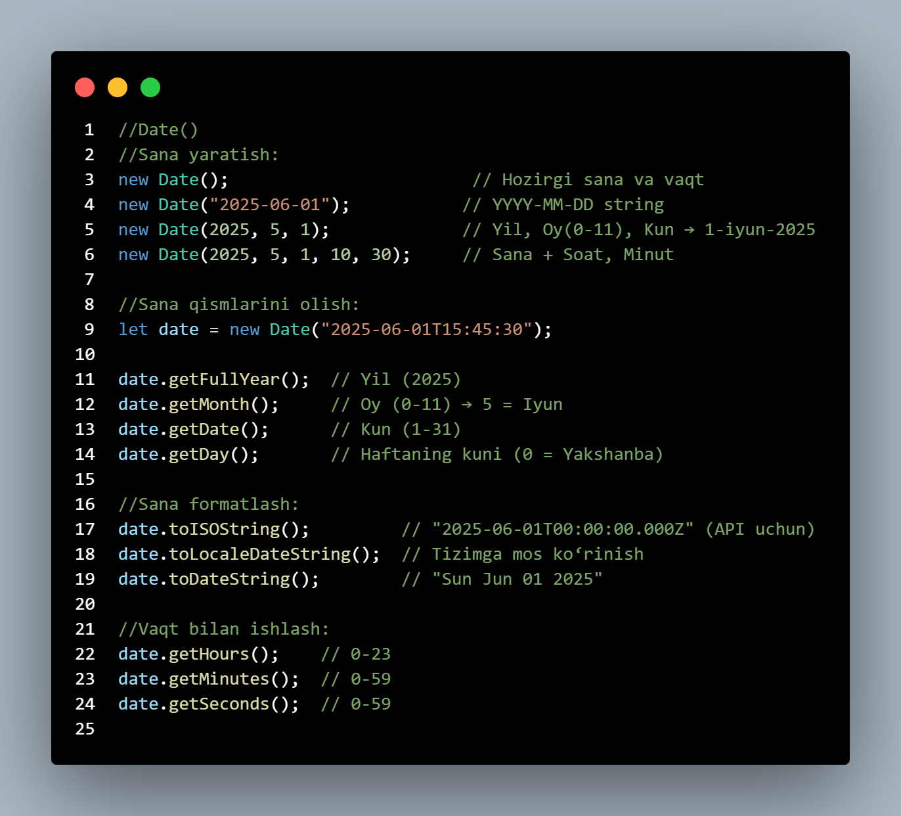

JavaScriptda Date — bu vaqt va sana bilan ishlash uchun maxsus built-in (ichki) obyekt.
U
yordamida:
Sana va vaqtni olish,
Yangi sana yaratish,
Sana formatini o‘zgartirish,
Sanalar orasidagi farqni topish,
Sana ustida amallar bajarish (qo‘shish, ayirish) mumkin.

JSON — bu ma'lumotlarni saqlash va uzatish uchun ishlatiladigan engil, matn asosidagi format.
U asosan JavaScript obyektiga o‘xshaydi, lekin bu faqat matn sifatida yoziladi.
Ko‘p hollarda API, ma’lumotlar almashinuvi yoki konfiguratsiya fayllari uchun
ishlatiladi.
{
"name": "Bekmuhammad",
"age": 18,
"isStudent": true,
"skills": ["JavaScript", "Node.js"],
"address": {
"city": "Andijon",
"district": "Chinobod"
}
}
Foydalanuvchi tug‘ilgan sanasini bazaga saqlash kerak. Sana `YYYY-MM-DD` formatida bo‘lishi lozim.
let input = "01/06/2025";
//Natija: "2025-06-01"
Format: YYYY-MM-DD
Sertifikat chiqarish uchun sana `DD-MM-YYYY` ko‘rinishida yozilishi kerak.
let date = new Date("2025-06-01");
//Natija: "01-06-2025"
Format: DD-MM-YYYY
AQShda foydalanuvchidan sana so‘raladi va `MM-DD-YYYY` formatda uzatiladi.
let date = new Date("2025-06-01");
//Natija: "06-01-2025"
Format: MM-DD-YYYY
Sana fayl nomi uchun kerak: `report_YYYY/MM/DD.txt` ko‘rinishida bo‘lishi lozim.
let date = new Date("2025-06-01");
// "report_2025/06/01.txt"
Format: YYYY/MM/DD
Telegram boti foydalanuvchiga sanani `DD.MM.YYYY` formatida jo‘natadi.
let date = new Date("2025-06-01");
//Natija: "01.06.2025"
Format: DD.MM.YYYY
Frontend sahifada sana foydalanuvchining brauzer tiliga mos ravishda chiqariladi.
let date = new Date("2025-06-01");
// Masalan: "01.06.2025" yoki "6/1/2025"
Format: toLocaleDateString()
API JSON formatida sanani `ISO 8601` formatda yuboradi.
let date = new Date("2025-06-01T00:00:00Z");
//date.toISOString() "2025-06-01T00:00:00.000Z"
Format: ISO 8601
Backend JWT token muddati Unix timestamp (sekund) formatida saqlaydi.
//new Date("2025-06-01") => 1743801600 s
Format: Unix timestamp (seconds)
Email yuborishda headerda `toUTCString()` formatda sana yoziladi.
let date = new Date("2025-06-01");
// "Sun, 01 Jun 2025 00:00:00 GMT"
Format: toUTCString()
Postlar sarlavhasida sana `Sun, Jun 1 2025` ko‘rinishida ko‘rsatiladi.
let date = new Date("2025-06-01");
// "Sun, Jun 1, 2025"
Format: ddd, MMM D YYYY
Masala 1: Foydalanuvchi ma’lumotlari obyekt ko‘rinishida berilgan. Uni
serverga yuborish uchun JSON formatiga o‘tkazing.
let user = { name: "Ali", age: 20, isStudent: true };
// Natija: '{"name":"Ali","age":20,"isStudent":true}'
Metod: JSON.stringify()
Masala 2: Serverdan kelgan JSON ma’lumotni qabul qilib, uni JavaScript obyektiga aylantiring va foydalanuvchining ismini chiqaring.
let response = '{"name":"Zuxra","age":22}';
// Zuxra
Metod: JSON.parse()
Masala 3: Mahsulotlar ro‘yxati berilgan. Uni localStorage'ga saqlash uchun JSON formatiga o‘tkazing, keyin esa localStorage'dan olib, obyekt sifatida foydalaning.
// Saqlash let products = [ { name: "Book", price: 30 }, { name: "Pen", price: 5 } ];
// Book
Metodlar: JSON.stringify(), JSON.parse(),
localStorage
Masala 1: Massivdan shartga mos birinchi elementni topadigan
myFind nomli funksiya yozing. U massiv va callback funksiyasini qabul
qilib, birinchi mos kelgan qiymatni qaytarsin.
// Funksiya
function myFind(array, callback) {
...
}
// Foydalanish
const numbers = [1, 3, 5, 7, 10];
Metodlar: callback, return, for
Masala 2: Massivdagi barcha shartga mos elementlardan yangi massiv hosil
qiladigan myFilter funksiyasini yozing.
// Funksiya
function myFilter(array, callback) {
}
// Foydalanish
const numbers = [1, 3, 5, 7, 10];
//Faqat arraydan juftlarini ajrat
Metodlar: push(), callback, for
Masala 3: Har bir massiv elementini yangi qiymatga aylantiradigan
myMap nomli funksiya yozing.
// Funksiya
function myMap(array, callback) {
}
// Foydalanish
const numbers = [1, 3, 5];
//Natija: [2, 6, 10]
Metodlar: push(), callback, for
Masala 4: Kamida bitta element shartga mos bo‘lsa true
qaytaradigan mySome funksiyasini yozing.
// Funksiya
function mySome(array, callback) {
}
// Foydalanish
const numbers = [2, 4, 6, 8];
// Array ichida toq son borligini tekshir.
Metodlar: callback, for, return
Masala 1: Quyidagi foydalanuvchi obyektidan name va
age qiymatlarini destrukturizatsiya yordamida ajrating.
// Ma'lumot
const user = { name: "Bekzod", age: 25, country: "Uzbekistan" };
// Natija
console.log(name); // "Bekzod"
console.log(age); // 25
Metodlar: object destructuring
Masala 2: Quyidagi funksiyaga foydalanuvchi obyektini uzatganingizda,
destrukturizatsiya yordamida faqat email va phone qiymatlarini
oling.
function contactInfo({ email, phone }) {
console.log("Email:", email);
console.log("Phone:", phone);
}
const user = {
name: "Lola",
email: "lola@example.com",
phone: "+998901234567",
age: 22
};
Metodlar: function parameter destructuring
Masala 3: Quyidagi massivdan destrukturizatsiya orqali birinchi va uchinchi elementni oling. Ikkinchi elementni tashlab ketilsin.
const colors = ["red", "green", "blue", "yellow"];
// Natija
console.log(first); // "red"
console.log(third); // "blue"
Metodlar: array destructuring
Masala 4: Quyidagi mahsulot obyektidan narx va valyuta qiymatlarini
ajrating va ularni bir qatorda chiqaring: "Narx: 12000 so'm".
const product = {
name: "Qalam",
price: {
amount: 12000,
currency: "so'm"
}
};
// Natija
console.log(`Narx: ${amount} ${currency}`); // "Narx: 12000 so'm"
Metodlar: nested object destructuring, template literals
Masala 5: Quyidagi foydalanuvchi sozlamalari obyektidan
theme va language qiymatlarini ajrating. Agar qiymatlar yo‘q
bo‘lsa, "light" va "uz" default qiymatlarni qo‘llang.
const settings = {
theme: undefined,
language: undefined
};
// Natija
console.log(theme); // "light"
console.log(language); // "uz"
Metodlar: object destructuring, default values
Masala 1 (setTimeout): Sahifani ochganingizdan 3 soniyadan keyin
"Xush kelibsiz!" degan xabarni chiqaradigan kod yozing.
Metod: setTimeout
Masala 2 (setInterval): Har 1 soniyada konsolga hozirgi vaqtni chiqarib boradigan funksiya yozing.
Metod: setInterval, new Date()
Masala 3 (to‘xtatish bilan): Foydalanuvchiga 5 soniyagacha hisoblashni ko‘rsatib boradigan va 5dan keyin to‘xtaydigan dastur yozing.
Metodlar: setInterval, clearInterval
Masala 4 (setTimeout ketma-ket): Har 1 sekundda ketma-ket 1
dan 5 gacha sonlarni chiqaradigan ketma-ket setTimeout yozing.
Metodlar: setTimeout, for loop
Masala 1: Foydalanuvchi tug‘ilgan sanasini bazaga saqlash kerak. Sana
YYYY-MM-DD formatida bo‘lishi lozim.
let input = "01/06/2025"; // Natija: "2025-06-01"
Format: YYYY-MM-DD
Masala 2: Foydalanuvchidan sana qabul qilinadi
(YYYY-MM-DD). Sananing yil va oy qismini ajratib oling, oy nomini inglizcha
chiqarilsin.
let input = "2023-12-25";
Format: YYYY-MM-DD → yil va oy nomi
Masala 3: Sana stringi DD.MM.YYYY formatida berilgan. Uni
YYYY/MM/DD formatiga o‘zgartiring.
let input = "15.09.2024"; // Natija: "2024/09/15"
Format: DD.MM.YYYY → YYYY/MM/DD
Masala 4: Sana berilgan: 2025-07-20. Sanaga 10 kun qo‘shib,
natijani toLocaleDateString() formatida chiqarilsin.
let input = "2025-07-20";
Format: YYYY-MM-DD + 10 kun → toLocaleDateString()
Masala 5: Foydalanuvchi kiritgan sananing kunini (day) 1 ga kamaytiring
va natijani YYYY-MM-DD formatida chiqaring.
let input = "2024-01-01";
Format: YYYY-MM-DD - 1 kun → YYYY-MM-DD
Masala 1: Foydalanuvchi forma orqali malumot kiritdi. Ushbu
ma’lumotlarni JSON formatida saqlab qo‘ying.
let name = "Bekmuhammad"; let email = "bek@example.com";
let userData = {
};
// Natija: '{"name":"Bekmuhammad","email":"bek@example.com"}'
Metod: JSON.stringify()
Masala 2: Serverdan JSON ko‘rinishida kelgan ma’lumotdan faqat active bo‘lgan foydalanuvchilarni ajrating.
let response = ` [ { "name": "Ali", "active": true }, { "name": "Vali", "active": false }, { "name": "Sami", "active": true } ] `;
// Natija: [{ name: "Ali", active: true }, { name: "Sami", active: true }]
Metodlar: JSON.parse(), Array.filter()
Masala 1: Massivdagi barcha elementlar shartga mos bo‘lsa
true, aks holda false qaytaradigan myEvery nomli
funksiya yozing.
// Funksiya
function myEvery(array, callback) {
}
// Foydalanish
const numbers = [2, 4, 6];
// Array ichidagi barcha sonlar juft ekanini tekshir.
Metodlar: callback, for, return
Masala 2: Massiv elementlarini bitta qiymatga qisqartirib qaytaradigan
myReduce funksiyasini yozing. U reduce metodiga o‘xshashi kerak.
// Funksiya
function myReduce(array, callback, initialValue) {
}
// Foydalanish
const numbers = [1, 2, 3, 4];
; //yigindini chiqar => 10
Metodlar: callback, initialValue, for
Masala 1: Quyidagi foydalanuvchi massivdan 1-foydalanuvchining
name va age qiymatlarini destructuring yordamida oling.
const users = [
{ name: "Ali", age: 21 },
{ name: "Laylo", age: 23 }
];
// Natija
console.log(name); // "Ali"
console.log(age); // 21
Metodlar: array of objects destructuring
Masala 2: Quyidagi funksiya parametridan destructuring orqali
firstName va lastName qiymatlarini oling va bitta stringga
birlashtirib chiqaring.
function getFullName({ firstName, lastName }) {
return `${firstName} ${lastName}`;
}
const person = {
firstName: "Diyor",
lastName: "Karimov",
age: 18
};
Metodlar: function parameter destructuring, template literals
Masala 3: Quyidagi massivdan birinchi sonni a ga,
qolganlarini esa rest nomli yangi massivga ajrating.
const numbers = [10, 20, 30, 40, 50];
// Natija
console.log(a); // 10
console.log(rest); // [20, 30, 40, 50]
Metodlar: array destructuring, rest operator (...)
Masala 1: Foydalanuvchi saytingizga kirganda,
"Assalomu alaykum, foydalanuvchi!" xabari
3 soniyadan keyin konsolga chiqishi kerak.
Metod: setTimeout
Masala 2: Har bir soniyada konsolga quyidagi ko‘rinishda yozuv chiqsin. 5 marta chiqqach, to‘xtasin:
Sekund: 1
Sekund: 2
Sekund: 3
Sekund: 4
Sekund: 5
Metodlar: setInterval, clearInterval
Masala 3: Foydalanuvchi parolni noto‘g‘ri kiritganidan so‘ng,
"Bloklandi. 5 soniyadan so‘ng qayta urinib ko‘ring." degan xabar chiqsin.
Va 5 soniyadan keyin "Yana urinib ko‘rishingiz mumkin." xabari chiqsin.
Metod: setTimeout
Masala 4: Ekranda taymer ishlashi kerak:
"0 sekund o'tdi", "1 sekund o'tdi", ..., "10 sekund o'tdi" ko‘rinishida.
10 sekunddan keyin to‘xtashi kerak.
Metodlar: setInterval, clearInterval